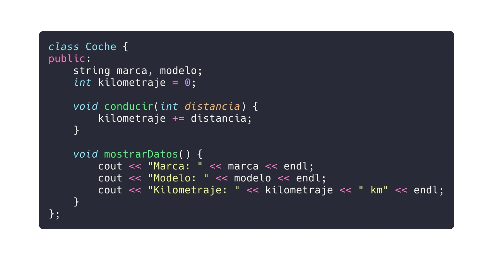

La Programación Orientada a Objetos (OOP) es un paradigma que nos permite modelar problemas del mundo real utilizando objetos. En C++, OOP se basa en la creación de clases y objetos. Aquí tienes una guía detallada con ejemplos de código real:
Clases y Objetos
Clase: Una clase es un plano o diseño técnico para crear objetos. Imagina una clase como el prototipo de un coche, que contiene detalles como marca, modelo y kilometraje.
Objeto: Un objeto es una instancia de una clase. Por ejemplo, un objeto de la clase "Coche" podría ser un SUV, un sedán o una furgoneta.
Ejemplo de una clase "Coche":

Principios Fundamentales de OOP
Encapsulación: Agrupar datos y funciones relacionadas dentro de una entidad única (la clase). Oculta los detalles técnicos al usuario.
Abstracción: Mostrar solo las características esenciales de la clase, ocultando los detalles internos.
Herencia: Permite crear nuevas clases basadas en clases existentes, reutilizando su funcionalidad.